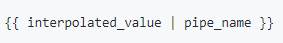
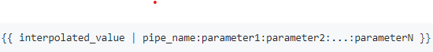

pipes works!
Lý thuyết
- pipe là một function nhận input mà chúng ta truyền vào, và output ra giá trị mình mong muốn.
- thông tin server là: 2020-06-24T09:00:00.000Z >> cần transform data người dùng có thể hiểu. Jun 24, 2020, 5:00:00
PM
- có 2 cách
+ Viết một function, nhận date input và return output.
+ Viêt một pipe, cũng nhận input và return output.
+ syntax: 
+ syntax với param: 
pipe: {{ now | date }}
//Jun 24, 2020
pipe với param: {{ now | date:'medium'}}
//Jun 24, 2020, 5:00:00PMF
nhiều pipe - Chaining pipe: {{ now | date:'medium' | uppercase}} // JUN 24, 2020, 5:00:00 PM